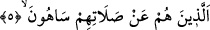

Âyetin başındaki “fâ” harfi, kendisinden sonraki kısmı, mahzûf bir şart cümlesine
bağlamak için gelmiştir. Bu durumda sanki şöyle denmiş olmaktadır: Yetîme, yoksula
aldırmamak, dîni yalan sayma alâmetlerinden olduğuna ve bu da kınanmayı ve
azarlanmayı gerektiğine göre, namazlarından gâfil olanlara vâh olsun, yazıklar olsun,
şiddetli azâb onların başınadır.
5. Onlar namazlarını ciddîye almazlar.
Namazdan gâfil olma anlamı verilen “sehv”; gafletten kaynaklanan hatâ demektir. Bu
da iki çeşittir. Birincisi; bu hareketin itici gücünün ve bu hareketi yaptıran şeyin insanın
içinde olmamasıdır. Birisine söven bir akıl hastasının durumu bu kabîldendir. İkincisi
ise, bu hareketin iticisi ve yaptıranı insanın içinde olmasıdır. Şarap içip de -kastı
olmaksızın- kendisinden bir münker meydana gelen kimsede olduğu gibi. Birinci
affolunmuştur. İkincisi ise insanı sorumlu kılar. Allah Teâlâ’nın burada kınamış olduğu
fiil, bu ikinci kısma giren.
Onlar, namazlarını terk ederek gaflete düşenler, ona az yönelenler aldırmayan ve
ciddîye almayanlardır. Bu da münâfık veye fâsık mü’minlerin fiilidir. Bu mânâ “an”
harf-i cerrinden anlaşılmaktadır. Bundan dolayı Enes (r.a.) der ki: “Allah’a hamdolsun
ki, Allah Teâlâ “fî salâtihim/namazlarında” demedi.” Çünkü öyle deseydi, âyetin
mânâsı: “Onlar namazlarında iken gâfildirler” şeklinde olurdu. Bu gaflet de ya şeytanın
vesvesesi, ya da kişinin içinden geçen düşünceler şeklinde olur. Bu durumdan ise hemen
hemen hiçbir mü’min kurtulamaz. İnsanın bundan yakasını kurtarması çok zordur. Bu
âyet-i kerime nâzil olunca Peygamber Efendimiz (s.a.): “Bu, sizin için herbirinize
dünya kadar mal verilmesinen daha hayırlıdır.” buyurmuştur.[230]
“Nebî (s.a.)’den hiç sehv hâli sâdır olmuş mudur?” diye sorulursa, “Evet” deriz.
Nitekim Hendek günü , “Onlar bizi namazımızdan alıkoydular” buyurmuştur. Hadîsin
devamında, “Allah kabirlerini ateşle doldursun” diye bedduâ etmiştir.[231]
Yine Efendimiz (s.a.) Ta‘rîs gecesi sabah namazını sehven geçirmiştir.[232] Bir
keresinde de öğle namazını iki rekât kılarak selâm vermişti. Daha sonra Hz. Ebû Bekir
O’na (s.a.) “İki rek’at kıldınız” diye sehvini hatırlatmış, Efendimiz de (s.a.) kalkıp
namazına iki rekât daha ilâve etmiştir.[233] Ancak Rasûlullah (s.a.)’in bu zikredilen
hâdiselerde ve başka yerlerdeki sehvi asla diğer insanların sehvleri gibi değildi.
İnsanların içinde kim Nebiyy-i Ekrem Efendimiz (s.a.) gibi olabilir? Çünkü O (s.a.)
dâimâ bir istiğrâk ve incizâb hâlinde bulunuyordu. Nitekim Efendimiz (s.a.) “Benim
gözlerim uyur, ama kalbim uyumaz” buyurur.[234]
Bu âyet-i kerimede, namazın letâifinin şühûdundan sehve ve onun esrâr ve
ilimlerinden gaflet edildiğine işâret vardır.